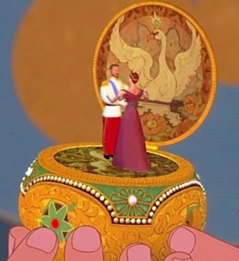

Songs of the past
June 23, 2026
Please, turn down the music box of memory.
Tears cannot beat the silence of the past.
Let a dance of oblivion be the last remedy.
Don't linger in an old frozen reverie.
Its lullaby, however sweet, won't last.
Please, turn down the music box of memory.
Or the siren past will sing on as dearest enemy
And turn deafened ears to stop aghast.
Let a dance of oblivion be the last remedy.
Allow white ink to flow in the secret diary.
The past should not dictate what's meant to last.
Please, turn down the music box of memory.
Listen to the outdoor signs of revelry:
Is today's song playing at full blast?
Let a dance of oblivion be the last remedy.
The future keeps its own untold treasury.
Its vaults open wide for those who shed the past.
Please, turn down the music box of memory.
Let a dance of oblivion be the last remedy.
· · ·
Context & Notes
As an exercise for the Massachusetts Poetry Olympics, here is my first villanelle, capturing the struggle of living in the present while letting go of the past. The music box, a metaphor for memory, echoes in me like a voice that never fully fades — sometimes sweet as a lullaby, sometimes insistent as a siren, sometimes slipping into the present as I write in my diary. Dancing becomes the remedy: a way to release the past and surrender to the now.
Comments
If this poem stirred something in you, share a thought below.